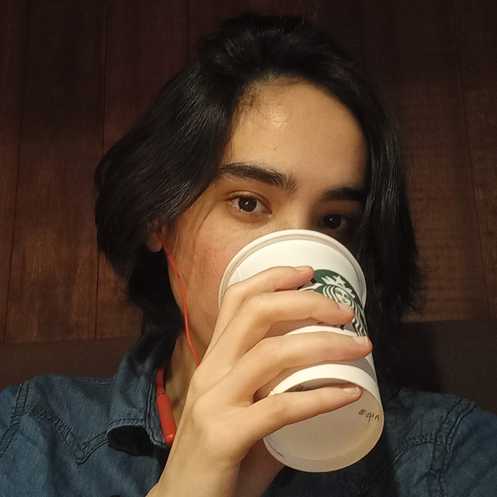

Paula Mayumi
Desenvolvedora Full Stack Júnior


Sobre
Olá, meu nome é Paula Mayumi. Seja bem-vindo(a) ao meu Portfólio!
Descobri o gosto por programação desde que aprendi Python, na faculdade para o meu TCC. Passei a me envolver mais e estudar por conta própria, e recentemente fui selecionada pela Generation Brasil para estudar a formação Java Full Stack e obter meu primeiro emprego na área como dev.
Fatos aleatórios sobre mim: gosto de ler, praticar calistenia, jogar (meu game favorito é Cuphead) e assistir séries e animes.